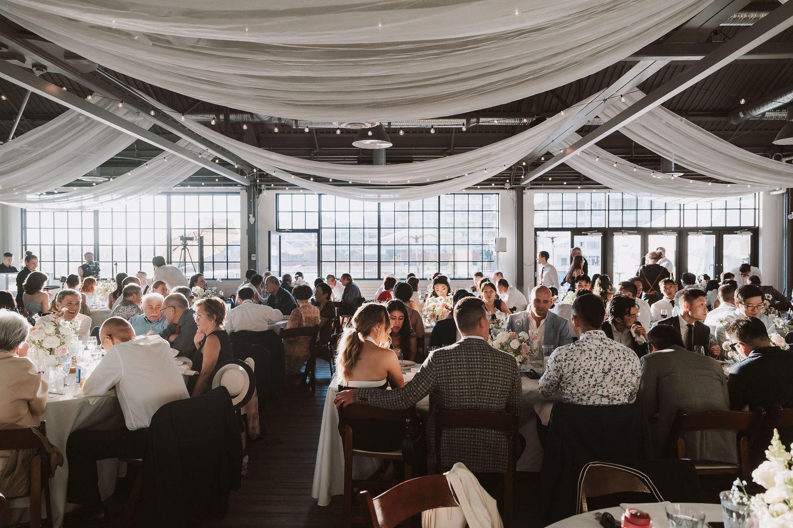
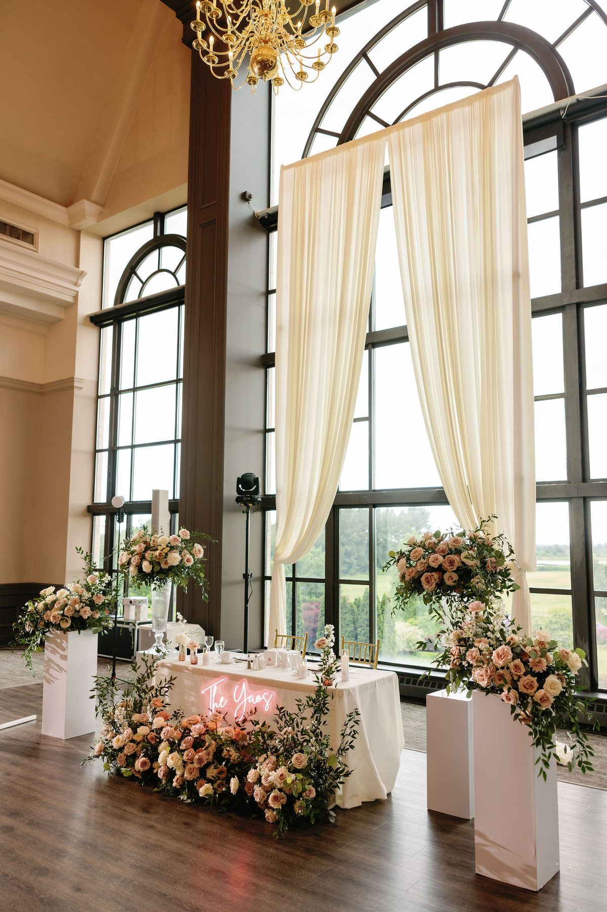
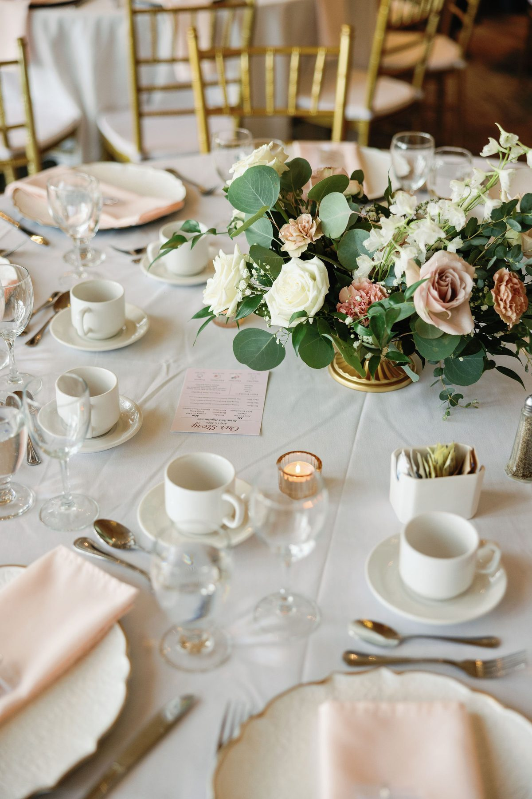
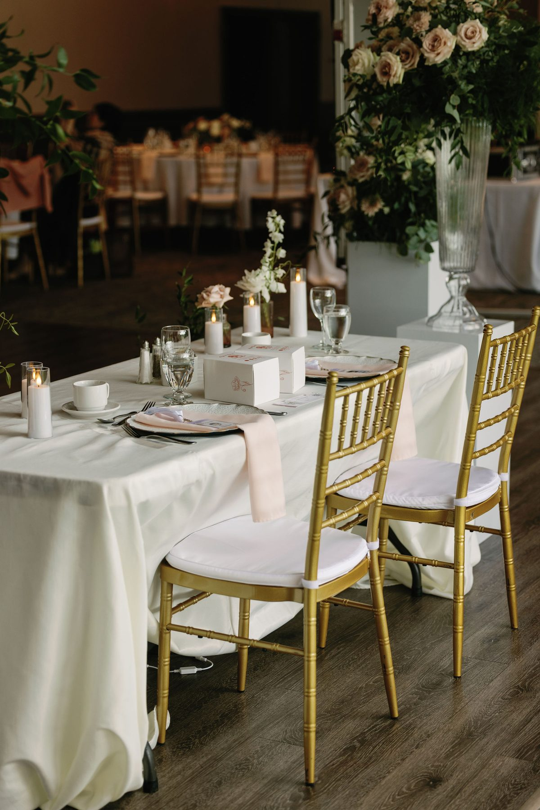
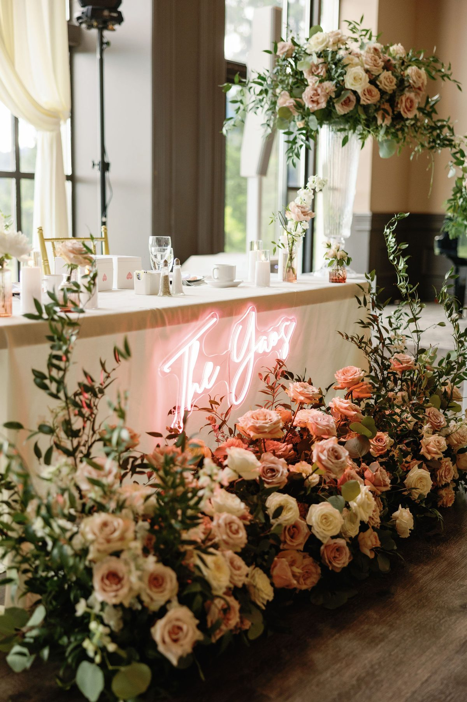
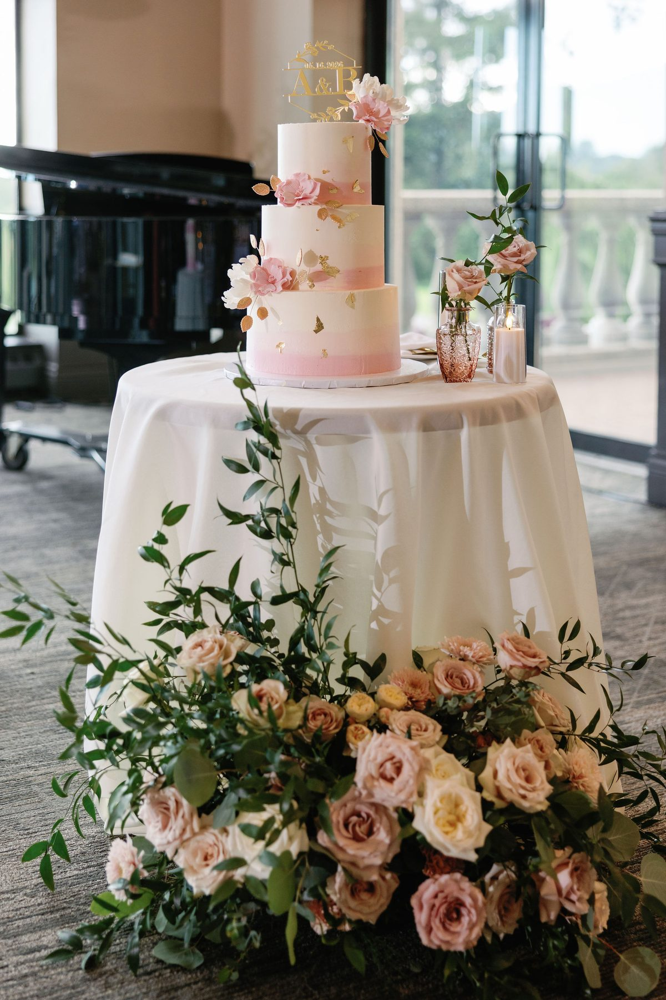
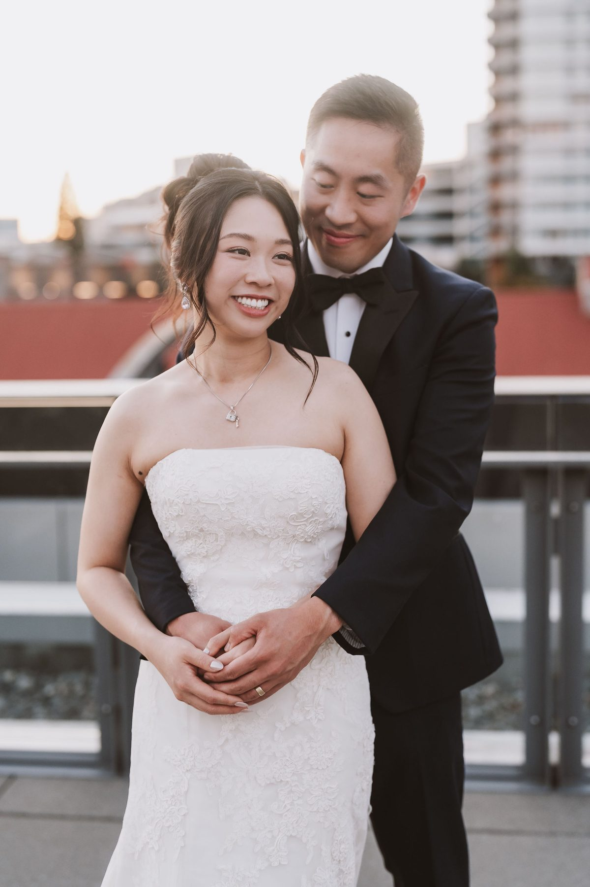

Looking for small wedding venues in Vancouver? These 6 stunning spots are made for intimate ceremonies and micro weddings — with the views and atmosphere to match.
There's something about a smaller wedding that just hits differently. No scrambling to greet 200 people. No shouting over a DJ to talk to your mom. Just you, the people who actually matter, and a space that feels chosen — not rented by the square foot.
Vancouver is genuinely one of the best cities in the world for intimate weddings. Between the heritage estates, waterfront restaurants, hotel salons, and outdoor spaces with mountain backdrops, there's no shortage of venues built for 10 to 50 guests who want something that feels personal and elevated.

Here are six of our favourites — places we've photographed, loved shooting in, and would recommend to any couple doing it their way.
1. Rosewood Hotel Georgia
If your idea of a wedding involves marble floors, a champagne tower, and the kind of lighting that makes everyone look incredible — the Hotel Georgia is your place. Built in 1927 and restored to its original grandeur, it's one of Vancouver's most iconic buildings.
Their intimate salon spaces seat 20 to 40 guests comfortably, and the service is the kind that makes a small wedding feel indulgent rather than understated. The ballroom lighting is warm, the architecture is endlessly photogenic, and the downtown location makes getting around easy for out-of-town guests.

Best for: Couples who want old-world glamour and impeccable service without booking an entire hotel ballroom.
2. Hycroft Manor
Set in the heart of Shaughnessy, Hycroft Manor is a 1909 heritage mansion surrounded by mature gardens. It's the kind of place that feels like a movie set — soaring ceilings, ornate mouldings, a sweeping staircase — but it's genuinely available for intimate ceremonies and receptions.
The garden terrace is one of the most beautiful ceremony spots in the city, especially in late spring when everything is in bloom. Inside, the formal rooms work beautifully for micro receptions or dinners. It photographs beautifully at every hour of the day.

Best for: Couples who want elegance with history — and a garden ceremony that doesn't require renting a tent.
3. Seasons in the Park
Few wedding venues in Vancouver have a view like Seasons in the Park. Perched at the top of Queen Elizabeth Park, the panoramic sight lines stretch across the city skyline to the North Shore mountains — and on a clear day, it's genuinely hard to stop taking photos.
The restaurant accommodates private buyouts for intimate receptions, and the surrounding park gives you incredible options for portraits before or after the meal. It's warm, elegant, and the food is actually excellent — which matters more than people admit when planning a wedding.

Best for: Couples who want an outdoor-adjacent feel with reliable rain backup and a view that does half the work.
4. The Liberty Distillery
Granville Island has a character that very few places in Vancouver can match, and The Liberty Distillery sits right at the heart of it. The space is industrial-chic — exposed beams, copper stills, warm lighting — and it's one of the better options in the city for a cocktail-first reception with an intimate feel.
It works especially well for couples who don't want a traditional "sit-down dinner" wedding. Think cocktail hour that becomes the whole evening: small plates, craft spirits, dancing if you want it, and a space that feels genuinely alive rather than rented-out.

Best for: Couples who want a reception that feels more like a great party than a formal event.
5. Brock House Restaurant
Brock House is a 1912 heritage home on the water in Point Grey, and it's one of those Vancouver gems that locals know but visitors often miss. The garden patio overlooks English Bay, the interiors are warm and intimate, and the whole property has a timeless quality that photographs beautifully in any season.
For a ceremony of 20 to 40 guests, it's hard to beat — especially if you want waterfront access without the full resort price tag. The wedding coordination team is experienced, the food is strong, and the light on that patio in golden hour is genuinely stunning.

Best for: Couples who want waterfront romance without leaving the city, and a venue that feels like someone's beautiful home.
6. The Wallace, Lonsdale Quay
On the North Shore waterfront, The Wallace brings something the downtown venues can't: Burrard Inlet right outside the door, the city skyline as your backdrop, and a space that manages to feel both intimate and genuinely special. It's one of those venues where the location does a lot of the heavy lifting — and the interior is warm and well-designed enough to stand on its own when the weather calls for it.
For couples who want to cross the water and give their guests an event that feels like a destination without actually leaving Metro Vancouver, The Wallace is a strong call. The light on the water in the afternoon is exceptional, and the North Shore mountains behind the city skyline make for portraits that are hard to replicate anywhere else in the Lower Mainland.
Best for: Couples who want waterfront drama, a memorable skyline backdrop, and something that feels a little different from a downtown venue.
How to Choose the Right Venue for Your Intimate Wedding
The biggest mistake couples make when choosing a small wedding venue is treating it like a scaled-down version of a big wedding. Intimate venues have their own logic.
Start with the feeling you want in the room. Formal and elevated? Heritage and romantic? Relaxed and modern? That narrows the list fast. Then think about your headcount not as a minimum but as a ceiling — an intimate venue for 30 that's half-empty doesn't feel intimate, it feels sparse.

Ask about buyout policies early. Many restaurants and heritage properties will give you exclusive use for a minimum spend rather than a per-head fee, which can actually work in your favour with a smaller guest list.
And don't underestimate photography. An intimate wedding means more focused attention on you — which means the venue's light, texture, and layout matter even more than they would in a large ballroom where there's always something going on in the background.
A Note on Budget
Intimate weddings are generally more cost-effective per guest — but the per-head spend often goes up because couples redirect that savings into better food, better photography, and better details. That's a smart trade.
Most of the venues above have minimums in the $3,000–$8,000 range depending on the day and season. Weekday or Sunday ceremonies can bring that down significantly, and off-season bookings (November through February) often come with considerably more flexibility.
If you're planning an intimate wedding in Vancouver and want photography that actually captures how it felt — not just how it looked — we'd love to hear from you.
← Back to the journal